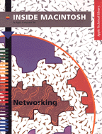

Networking
Inside Macintosh: Networking describes how to write software that uses any of the AppleTalk networking protocols. You need this book if you want to write an application specifically designed to use AppleTalk, an AppleTalk network server, or a new networking protocol that is a client of any of the AppleTalk protocols. This book will also enhance your understanding of Macintosh communications and collaborative computing products such as the Communications Toolbox and the PPC Toolbox. This book covers the following topics in detail:Because all AppleTalk protocols are implemented as device drivers, to use this book you should be familiar with the Device Manager, which is described in Inside Macintosh: Devices. If you want to design your own protocol to work with the AppleTalk protocols or if you want to implement an AppleTalk protocol on a non-Macintosh platform, you should also consult Inside AppleTalk.
- the components and organization of AppleTalk
- how to select an AppleTalk protocol
- application interfaces to all AppleTalk protocols
- the Link Access Protocol (LAP) Manager
- the .ENET driver and Ethernet protocol handlers
Availability: Click below to obtain Inside Macintosh: Networking in any of the following formats.

Book Contents
- Figures, Tables, and Listings
- Preface - About This Book
- Chapter 1 - Introduction to AppleTalk
- Chapter 2 - AppleTalk Utilities
- Chapter 3 - Name-Binding Protocol (NBP)
- Chapter 4 - Zone Information Protocol (ZIP)
- Chapter 5 - AppleTalk Data Stream Protocol (ADSP)
- Chapter 6 - AppleTalk Transaction Protocol (ATP)
- Chapter 7 - Datagram Delivery Protocol (DDP)
- Chapter 8 - AppleTalk Session Protocol (ASP)
- Chapter 9 - AppleTalk Filing Protocol (AFP)
- Chapter 10 - Link-Access Protocol (LAP) Manager
- Chapter 11 - Ethernet, Token Ring, and Fiber Distributed Data Interface
- Chapter 12 - Multinode Architecture
- Glossary
- Index